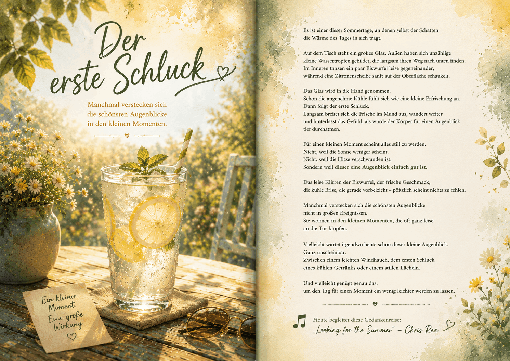

AI Website GeneratorEine Gedankenreise zum Verschenken

🥤 Der erste Schluck
Es ist einer dieser Sommertage,
an denen selbst der Schatten die Wärme des Tages in sich trägt.
Auf dem Tisch steht ein großes Glas.
Außen haben sich unzählige kleine Wassertropfen gebildet,
die langsam ihren Weg nach unten finden.
Im Inneren tanzen ein paar Eiswürfel leise gegeneinander,
während eine Zitronenscheibe sanft auf der Oberfläche schaukelt.
Das Glas wird in die Hand genommen.
Schon die angenehme Kühle fühlt sich wie eine kleine Erfrischung an.
Dann folgt der erste Schluck.
Langsam breitet sich die Frische im Mund aus, wandert weiter und hinterlässt das Gefühl,
als würde der Körper für einen Augenblick tief durchatmen.
Für einen kleinen Moment scheint alles still zu werden.
Nicht, weil die Sonne weniger scheint.
Nicht, weil die Hitze verschwunden ist.
Sondern weil dieser eine Augenblick einfach gut ist.
Das leise Klirren der Eiswürfel, der frische Geschmack, die kühle Brise,
die gerade vorbeizieht – plötzlich scheint nichts zu fehlen.
Manchmal verstecken sich die schönsten Augenblicke nicht in großen Ereignissen.
Sie wohnen in den kleinen Momenten, die oft ganz leise an die Tür klopfen.
Vielleicht wartet irgendwo heute schon dieser kleine Augenblick.
Ganz unscheinbar.
Zwischen einem leichten Windhauch,
dem ersten Schluck eines kühlen Getränks oder einem stillen Lächeln.
Und vielleicht genügt genau das,
um den Tag für einen Moment ein wenig leichter werden zu lassen.
🎵 Wer mag, kann diese Gedankenreise mit folgendem Lied begleiten:
„Looking for the Summer“ – Chris Rea
Quelle: YouTube – Originalvideo
https://youtu.be/A8a6kHQN9BA?is=FwNe9sRimXkRyrih
An heißen Sommertagen sehnen wir uns oft nach einer kleinen Abkühlung.
Doch manchmal ist es nicht nur das kühle Getränk selbst, das guttut.
Es ist der Moment, in dem wir bewusst innehalten, tief durchatmen und für einen Augenblick alles andere vergessen.
Diese Gedankenreise möchte daran erinnern, dass Erfrischung nicht nur den Körper erreicht.
Auch kleine Augenblicke der Ruhe können den Alltag ein wenig leichter machen.
Vielleicht beginnt genau dort ein kleines Stück Wohlbefinden.
Diese Gedankenreise entstand während einer außergewöhnlich heißen Sommerzeit.
Überall war zu hören, wie anstrengend die Hitze für viele Menschen geworden war.
Dabei fiel mir auf, dass manchmal schon ein einziges kühles Glas, der erste Schluck und ein kleiner Moment im Schatten genügen können,
um sich für einen Augenblick wieder leichter zu fühlen.
Aus diesem Gedanken entstand die Geschichte.
Nicht über den Sommer.
Nicht über die Hitze.
Sondern über das kleine Geschenk, das oft genau dann entsteht, wenn wir uns einen Moment Zeit nehmen und bewusst genießen, was uns gerade guttut.
Vielleicht wartet heute irgendwo Dein eigener kleiner Frischemoment.
Ein Platz im Schatten.
Ein leichter Windhauch.
Ein kühles Getränk.
Oder einfach ein Augenblick, in dem Du tief durchatmen kannst.
Nimm ihn bewusst wahr.
Manchmal reicht genau das, damit sich ein heißer Tag ein wenig leichter anfühlt.
AI Website Generator